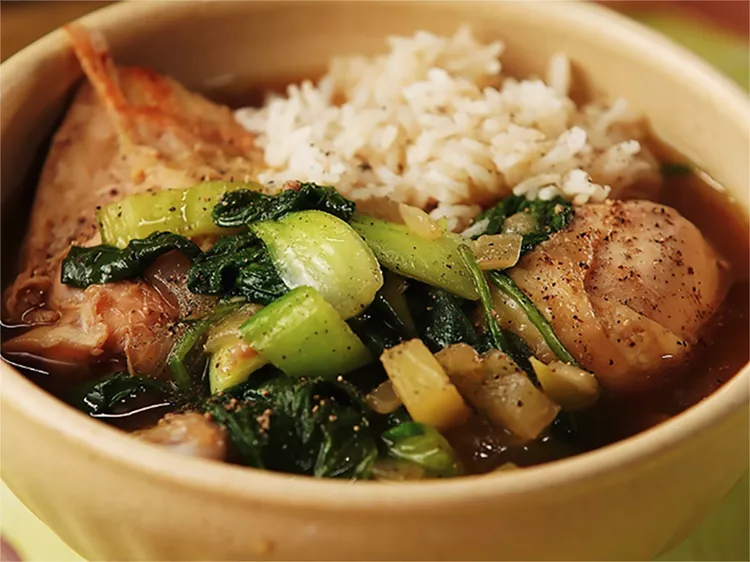

Home
Chicken Tinola

What Is Chicken Tinola?
Tinola is a traditional Filipino comfort food that usually consists of broth, chicken, leafy greens, papaya, and ginger. Fish sauce is a key ingredient that lends a deliciously pungent taste. Chicken tinola is often served with rice to make a hearty meal.
This version features chayote squash and bok choy for a fresh, vibrant spin on traditional chicken soup.
How to Make Chicken Tinola
Make this warming Filipino chicken soup a part of your regular rotation. You'll find the full recipe below with step-by-step instructions, but here's what you can expect when you make this top-rated recipe:
Begin gently cooking the onion and garlic in a large pot over medium heat until fragrant. Add the ginger, fish sauce, and chicken, and cook for about five minutes. Stir in the broth, squash, and seasonings before simmering until the chicken is white in the center.
Add bok choy and spinach, cooking the mixture just until the greens are wilted. Serve the soup hot by itself or paired with rice.
How to Store Chicken Tinola
Refrigerate the leftover chicken tinola in an airtight container for up to three days. If you'd like to freeze chicken tinola, use a heavy-duty bag or large, tight-lidded container for best results. Reheat on the stovetop.
Ingredients
- 1 tablespoon cooking oil
- 1 medium onion, chopped
- 2 cloves garlic, minced
- 1 (1 1/2 inch) piece fresh ginger, peeled and thinly sliced
- 1 tablespoon fish sauce
- 3 pounds chicken legs and thighs, rinsed and patted dry
- 2 (14 ounce) cans chicken broth
- 1 chayote squash, peeled and cut into bite-sized pieces
- salt and ground black pepper to taste
- 1 head bok choy, chopped
- 1 (8 ounce) package fresh spinach, chopped
Directions
- Heat oil in a large pot over medium heat. Add onion and garlic; cook and stir until fragrant, about 2 minutes. Add ginger and fish sauce; cook and stir for 1 to 2 minutes. Stir in chicken and cook for 5 minutes.
- Pour in chicken broth and cook for 5 minutes. Add squash and simmer until chicken is no longer pink in the center, about 10 minutes. Season with salt and pepper.
- Add bok choy and spinach; cook until spinach is just wilted, 1 to 2 minutes. Serve hot.
Tips
You can use a green papaya instead of chayote squash if preferred.
See original recipe from allrecipes.com